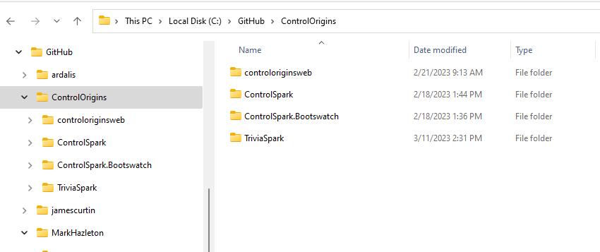
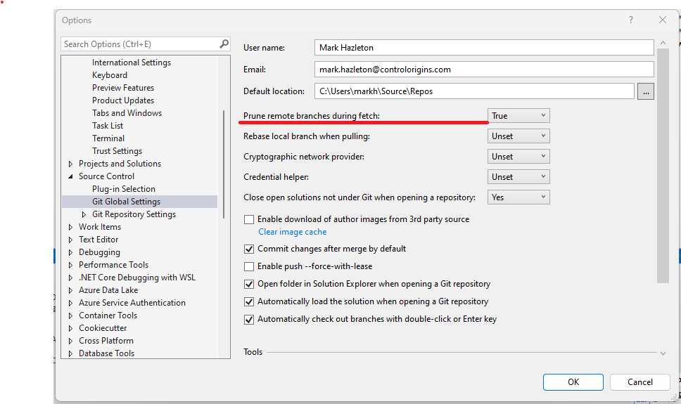

Expert Insights to Git Savvy
This article is a guide to help software developers improve their understanding of Git and its best practices. From version control basics to more advanced concepts like branching strategies and pull requests, this article aims to provide a good introduction to Git. Whether you are a beginner or an experienced Git user, you'll find valuable tips and insights to help you improve your productivity and collaboration with other developers. So get ready to "git" organized, improve your workflow, and "get good" at using Git.

Get to Know Git
Git, the distributed version control system that has become ubiquitous in software development, was first created by Linus Torvalds in 2005. Torvalds was frustrated with the limitations of the centralized version control systems that were available at the time and wanted to create a system that would allow developers to collaborate on projects remotely. Git was the result of his efforts.
In the years since its release, Git has continued to evolve and improve, with contributions from developers all over the world. Today, it is the go-to choice for version control in most software development projects and has become an essential tool for collaborating on code and managing complex software projects. Git's success is a testament to the power of open-source software, and to the passion and dedication of the many developers who have contributed to its development over the years.
Get Distributed
Git is a distributed version control system which means that every developer has a copy of the entire codebase on their local machine. Since each developer has a local copy of the codebase, they can make changes, commit them locally, and even switch between different branches of development without needing an internet connection. This is especially useful for developers who work in remote or disconnected environments, such as on a plane or in a location without reliable internet access. Once they're back online, they can push their changes to the remote repository. This makes it easy to collaborate on code and maintain version history.
Get With the Flow
As software development projects grow in size and complexity, it becomes increasingly important to have a well-defined branching strategy to manage code changes effectively. Without a proper strategy, it can be easy to introduce bugs, slow down development, and make it difficult to manage and maintain the codebase.
The Git Flow branching strategy was created by Vincent Driessen, a Dutch software developer, in 2010 with the article: A successful Git branching model . Git Flow solves the problem of having an unorganized and inconsistent branching strategy in software development projects. Before Git Flow, teams would often have their own ad hoc branching strategies that made it difficult for developers to understand what code was in which stage of development, and merge conflicts were common. Git Flow standardized a set of permanent and transitory branches for features and hotfixes, making it easier for developers to collaborate and manage changes.
Git Flow is a branching strategy that defines a set of permanent and transitory branches for features, releases, and hotfixes. It provides a standard way of working with Git that makes it easier for teams to collaborate and manage changes to the codebase. The Git Flow model consists of two permanent branches: the MAIN branch, which contains the stable production code, and the DEVELOP branch, which contains the latest code changes that are being tested before being released.
In addition to the permanent branches, Git Flow introduces a set of supporting branches to manage feature development, releases, and hotfixes. For example, when a new feature is being developed, a feature branch is created off of the develop branch. The feature branch is where all code changes related to the feature are made. Once the feature is complete and tested, it is merged back into the development branch. Similarly, hotfixes are made on a separate hotfix branch that is created off of the master branch. Once the hotfix is complete, it is merged back into both the master and develop branches. By standardizing these branches and the process for working with them, Git Flow helps teams manage code changes more efficiently and effectively.
Get It Together
In modern software development, projects often have multiple contributors working on different features or fixes simultaneously. Pull Requests (PRs) help manage these contributions by allowing developers to propose changes to the codebase, and to have those changes reviewed and validated by other members of the team before they are merged into the main codebase.
While PRs are not part of Git itself, they were introduced by systems that host Git repositories, such as GitHub, Azure DevOps, and others. They have become an essential part of the development process, particularly in agile and DevOps environments.
A PR Gate is a mechanism used in DevOps to ensure that the merge code is validated with a build and unit tests before the PR is merged into the main codebase. This helps ensure that code quality is maintained and that no regressions or errors are introduced into the system.
Other PR Gates can include requiring multiple approvers to review and approve the code changes before they can be merged, linking the PR to specific user stories or tasks in a project management system, and requiring an improvement in unit test coverage for any changes made in the codebase. All of these gates help ensure that code quality is maintained, and that changes to the codebase are thoroughly reviewed and validated before they are merged.
Get Organized
Do you ever feel like your code repositories have a mind of their own and are running rogue? Is your workspace more of a cluttered mess than a sleek and organized coding hub? Well, worry no more! In this article, we'll explore some top strategies for keeping your repositories in line.
You have likely battled your fair share of rogue code on your hard drive. It's time to end this war once and for all! Let us explore some strategies to keep your repositories in line and prevent them from going rogue. Let's take control of our code clones before they turn to the dark side and start a war. Let's get your code under control and Git organized!
You're hopefully familiar with Git and how it can help you manage your codebase. But when it comes to working with remote repositories like GitHub and Azure DevOps, there are some important file management strategies you should keep in mind to ensure that your work is organized and efficient.
- Folder Structure
- When cloning a repository from either of these platforms, I recommend that you create a folder structure on your local machine that reflects the platform you're using. For example, you might create a folder on your C drive called "\GitHub\{username}\{repository}". Then you can easily see which repositories have been cloned. This helps me keep track of where code is stored and avoid cluttering the file system with unorganized code. 
- Branching
-
Once you've cloned a repository, it's important to create a feature branch and sync it with the remote repository, so that your remote repository is the source of truth for your code. This ensures that you always have a backup of your work, and can easily roll back changes if needed.
When working with GitHub, it's common practice to first clone a repository to check it out, and then fork the repository if you plan on contributing to the project or making changes. By forking a repository, you create a copy of the original repository in your own GitHub account, which allows you to experiment and make changes without affecting the original project. It also makes it easier for you to submit pull requests back to the original project.
When working with a forked repository, it's important to keep your fork up to date with the original repository by regularly pulling changes from the original repository into your fork. This ensures that you are working with the latest version of the code, and helps avoid conflicts when submitting pull requests.
GitHub and Azure DevOps are not the only hosted Git repositories available. Other popular options include GitLab, Bitbucket, GitKraken, SourceForge, and AWS CodeCommit. Each platform has its own unique features and benefits, so it's important to evaluate your needs and choose the one that best fits your workflow and development process.
- Daily Activity
- When working with a remote repository, it's important to keep your local repository current with the develop branch of the remote repository. This makes sure you are not behind on work being done by others on the team. Keep your local repository current with the develop branch of the remote repository. This makes sure you are not behind on work being done by others on the team. Update your user/feature branch with develop at least once a day. This is to help limit the merge conflicts when you finish your work and try to do a pull request into develop. NEVER work on the develop branch in your local repository.
- Remove and Local Repository Prune
-
Keeping repositories (Origin/remote and local) in sync within Visual Studio can be confusing. Visual Studio does not always update all the remote branches when they are deleted. You can use the command line to make sure you are up to date with any branch changes.You can also use the Git command line to make sure you are up to date with any branch changes. To prune deleted remote branches from your local repository, use the following command:
$ git remote prune origin
Branching Red Flags
Sometimes a quick review of your repository can help you identify potential issues that could cause headaches in the future. Here are some things to look for.
- Improper Named Branches
- There should only be 2 branches at the root of the repository. "Develop" and "Master" (or Main). If you look at the branches in ADO Project you should just see 2 branches ((develop, master ) and folders (feature, hotfix or release,[Users] )
- Out of date Branches.
- The list of branches in ADO includes a column to show the number of commits behind and ahead of the default compare branch. We should only be comparing to master and develop branches. When a branch is more that 10-20 commits behind, there is a very high probability that we will have merge conflicts when we try to create a pull request to develop.
- Pull Requests for branches that are behind develop branch.
- All pull requests should be for branches that are 0 commits behind develop branch. That way we are never creating an untested state of code with the pull request.
- Multiple Release Branches
- Ideally, there should only be one deployment branch at a time. It could be a hotfix (a branch from master) or a release (a branch from develop). There are times when we may have both a hotfix and release branch at the same time, this should be very rare on short-lived. Once a deployment branch has been merged to Master and Develop it must be deleted from the repository.
- OLD Pull requests.
- The team should have an understanding of how long a pull request should take to complete. This can be several days, but not over a week. If a pull request is taking over a week, then that pull request can be abandoned. The feature branch can be updated and a new pull request created when the feature branch is ready for another review.
- Pull Requests without linked work item.
- It is a best practice to link at least one work item to each pull request. A little bit of pain now will make it easier to track the work later.
By following these file management strategies and best practices, you can ensure that your work with remote repositories is organized and efficient, and you can easily collaborate with others and contribute to open-source projects.
Conclusion:
Git is a powerful tool that allows developers to track changes in their code, collaborate with others, and manage projects efficiently. By following best practices, such as implementing a branching strategy like Git Flow, using pull requests, and adopting a code review process, teams can ensure that their code is organized, high-quality, and ready for deployment.
using Git requires ongoing learning and practice. As you work with Git more and more, you will undoubtedly encounter new situations and challenges. Don't hesitate to ask questions, reach out to colleagues or seek help from online communities. With time and experience, you can become a Git master and streamline your development process like never before.
Thank you for taking the time to read this article. I hope it has been informative and helpful in improving your Git practices.